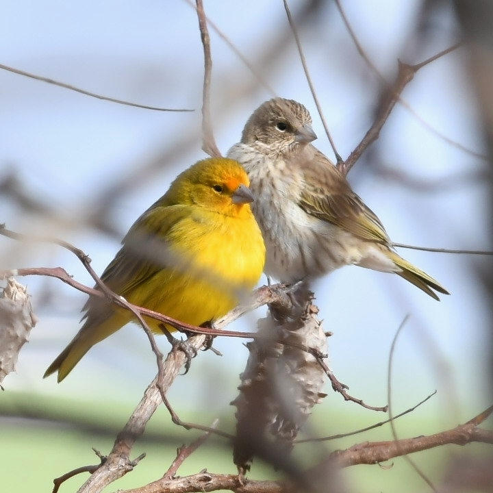
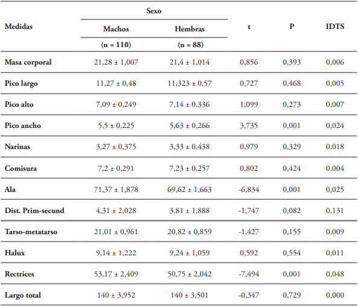
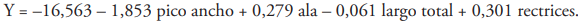

El Canario Coronado

El canario coronado (Serinus canaria) es un ave nativa de regiones semiáridas, adaptada a ambientes como el bosque seco tropical. Su colorido plumaje y su canto melódico lo convierten en una especie muy apreciada tanto por científicos como por observadores de aves.
Es un ave diurna, muy activa durante el día, y tiene hábitos sociales, viviendo en pequeños grupos fuera de la temporada de reproducción. Su longevidad promedio es de 7 a 10 años en libertad, aunque en cautiverio puede superar los 12 años con buenos cuidados.
Además, es una especie muy resistente, capaz de adaptarse a jardines, huertos y zonas semiurbanas, siempre que haya suficiente vegetación y disponibilidad de agua. Se ha utilizado como especie modelo para estudios de comportamiento, genética y canto de aves.
Sicalis flaveola es una especie de ave paseriforme de la familia Thraupidae perteneciente al género Sicalis. Es ampliamente difundido por gran parte de Sudamérica (excepto en la cuenca amazónica, en la Patagonia y en altitudes andinas), y debido a la preferencia como ave de jaula, ha sido introducido en diversos otros países.
Hábitat

Habita principalmente en zonas de bosque seco tropical, donde predomina la vegetación dispersa y los árboles como el trupillo, el dividivi y el guayacán. Suele construir sus nidos en ramas altas para proteger a sus crías de depredadores.
Prefiere áreas con arbustos bajos y claros abiertos para alimentarse. La especie se adapta bien a cambios estacionales y puede habitar jardines y zonas agrícolas cercanas a su hábitat natural, siempre que haya suficiente vegetación y agua disponible.
El canario coronado es capaz de sobrevivir en altitudes bajas y medias, y su presencia suele indicar un ecosistema relativamente saludable, con árboles y arbustos que proporcionan refugio y alimento durante todo el año.
🍽️ Alimentación

Su dieta se compone de semillas, frutos secos y pequeños insectos. Durante la temporada seca, aprovecha los recursos del bosque almacenando semillas que encuentra en el suelo y en plantas espinosas.
En cautiverio, los canarios coronados se alimentan de mezclas de semillas comerciales complementadas con frutas frescas y verduras. También necesitan agua fresca diariamente y, ocasionalmente, suplementos minerales para fortalecer su plumaje y salud general.
Durante la temporada de cría, incrementan el consumo de insectos para aportar proteínas esenciales al desarrollo de los polluelos. Su alimentación variada les permite adaptarse a cambios estacionales y a la disponibilidad de recursos en su entorno natural.
Comportamiento
Anida en cavidades y a veces usa nidos abandonados por el hornero (Furnarius rufus). Tiene un repetitivo reclamo, que combinado con su apariencia lo ha hecho una especie muy cotizada como ave de jaula.
Cuando están asustados pegan sus plumas y estiran el cuerpo y lo acompañan con sonidos alarmantes, generalmente reaccionan así ante un conflicto con un macho más fuerte o una amenaza como un gato o un ave rapaz.
Sus huevos son pequeños, como almendras, de color blanco puro y de cáscara delgada pero resistente. Alimentan a sus crías de pico a pico como hacen la mayoría de aves, las crías persiguen a sus padres con un continuo chirrido que no pasa desapercibido por su intensidad. La hembra construye el nido sola y el macho sólo la observa al mismo tiempo que canta y va y viene hasta que su nido está totalmente listo, si no es que han tomado otro abandonado. En áreas urbanas pueden ser bastante confiados y poner sus huevos incluso en macetas o cavidades en edificios.
Canto
El canto es adorable y placentero. Las notas son suficientemente espaciadas para darlas calmamente, de naturaleza agradablemente silbadas, por ejemplo: «zuhit, chiu, tzuup, chiu, pipa piu, tzuup, cheu...»; existe mucha variación pero el canto es siempre agradable hecho de notas de sonido dulce, algunas veces unas pocas notas más ásperas, y, diferente de otros chirigües, no sugieren un gorjeo o parloteo. El llamado típico es un «whip» ascendiente, también un corto «tuup».
Canto del canario:

Dismorfismo sexual

El Canario Coronado o Jilguero Dorado (Sicalis flaveola) presenta un dimorfismo sexual visible que facilita la distinción entre machos y hembras adultos. La diferencia más llamativa se encuentra en el plumaje. El macho exhibe un color amarillo intenso y brillante, a menudo descrito como "azafrán" u oro, que cubre su cuerpo y pecho. Su rasgo más distintivo es la "corona" o frente, que se tiñe de tonos anaranjados o rojizos intensos. Por el contrario, la hembra carece de esta coloración vívida, mostrando un plumaje mucho más discreto; su cuerpo es predominantemente gris pardusco o oliváceo, y su dorso presenta un estriado oscuro mucho más notorio que el del macho.
Además de las diferencias visuales, el canto es el indicador más fiable de la masculinidad. El macho es el único que desarrolla un canto melodioso, variado y fuerte con fines de cortejo y delimitación territorial. La hembra solo emite llamados o reclamos cortos y sencillos, como chirridos o notas de contacto, pero nunca el trino complejo y extenso que caracteriza al macho.

En un estudio realizado en el año 2021 en el campus universitario de la Universidad del Valle, Cali y zonas verdes de la ciudad de Jamundí, Valle del Cauca, se evalúo el dismorfismo sexual en Sicalis flaveola mediante medidas morfométricas. Donde capturaron un total de 198 individuos, 20 en Jamundí y 178 en Cali, correspondientes a 88 hembras y 110 machos. La identificación del sexo por caracteres morfológicos y comportamiento reproductivo correspondió 100% con el método molecular. Todas las medidas morfométricas cumplieron el supuesto de normalidad y homogeneidad de varianzas entre las matrices de covarianza (Box M Aprox = 1,791, gl1 = 10, gl2 =164521,152, p = 0,056), excepto por el Halux. Los machos presentaron alas y rectrices significativamente más largas que las hembras, mientras que las hembras presentaron un pico más ancho que los machos (Tabla 1). La distancia entre primarias-secundarias presentó diferencias significativas pero con un grado de precisión del 91,8% y sin embargo, fue la única medida corporal con diferencias importantes en el IDTS (Tabla 1). Esto significa que los machos presentan diferencias, entre sus plumas de vuelo, 13% más grandes que las hembras.

Las variables que mejor explican las diferencias morfométricas y permiten distinguir entre sexos está dada por la siguiente función discriminante:

Si y < 0 el ave se clasifica como hembras, y si y > 1 se considera macho. La ecuación permitió identificar correctamente el 77,8 % de los individuos. Con lo anterior se puede constatar que la especie posee un dimorfismo críptico y se propone una función discriminante que permite clasificar a los individuos según el sexo con base en sus medidas morfológicas.

Créditos
Página web creada por:
- 🌿 Luisa Díaz Rivera
- 🌿 Álvaro Rodríguez Potes
- 🌿 María Fernanda Viloria Zapata
Curso de Biología
Profesor: Rafik Neme Garrido
2025
Bibliografía
La información de esta página se obtuvo de las siguientes fuentes:
Dimorfismo sexual críptico en Sicalis flaveola (Aves: Thraupidae) en el trópico
BirdLife International. (2023). Sicalis flaveola. BirdLife Species Factsheet.
Hilty, S. L., & Brown, W. L. (1986). A guide to the birds of Colombia. Princeton University Press.
Pizano, C., & García, H. (Eds.). (2014). El Bosque Seco Tropical en Colombia. Instituto Humboldt.
Ridgely, R. S., & Tudor, G. (2009). Field guide to the songbirds of South America. University of Texas Press.